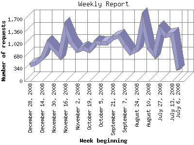

The Weekly Report identifies the activity for each week within the report
time frame. Remember that one page hit can result in several server requests
as the images for each page are loaded.
Note: Depending on the
report time frame for this report the first and last week may not represent
a full seven day week, resulting in lower hits.

| Week beginning | Number of requests | Number of page requests | |
|---|---|---|---|
| 1. | July 6, 2008 | 311 | 118 |
| 2. | July 13, 2008 | 1,285 | 512 |
| 3. | July 20, 2008 | 1,245 | 394 |
| 4. | July 27, 2008 | 1,421 | 389 |
| 5. | August 3, 2008 | 723 | 306 |
| 6. | August 10, 2008 | 920 | 306 |
| 7. | August 17, 2008 | 1,627 | 421 |
| 8. | August 24, 2008 | 846 | 357 |
| 9. | August 31, 2008 | 774 | 360 |
| 10. | September 7, 2008 | 984 | 514 |
| 11. | September 14, 2008 | 1,230 | 468 |
| 12. | September 21, 2008 | 1,178 | 415 |
| 13. | September 28, 2008 | 1,054 | 545 |
| 14. | October 5, 2008 | 1,051 | 573 |
| 15. | October 12, 2008 | 1,056 | 515 |
| 16. | October 19, 2008 | 831 | 493 |
| 17. | October 26, 2008 | 898 | 470 |
| 18. | November 2, 2008 | 833 | 443 |
| 19. | November 9, 2008 | 1,048 | 484 |
| 20. | November 16, 2008 | 1,453 | 595 |
| 21. | November 23, 2008 | 696 | 417 |
| 22. | November 30, 2008 | 866 | 399 |
| 23. | December 7, 2008 | 1,035 | 490 |
| 24. | December 14, 2008 | 632 | 272 |
| 25. | December 21, 2008 | 490 | 331 |
| 26. | December 28, 2008 | 443 | 243 |
Most active week beginning November 16, 2008 : 595 pages sent. 1,627 requests handled.
Weekly average: 416 pages sent. 958 requests handled.
This report was generated on January 9, 2009 16:38.
Report time frame July 11, 2008 00:18 to January 1, 2009 04:01.
| Web statistics report produced by: analog 6.0 / Report Magic 2.21 |